better-goal; the take it replaces is scored in the last row.| Take | Hero at 1024, then renders at 128 / 64 / 48 / 32 / 16 css px (2× retina sources), plus the 16px squint magnified | Rubric | Verdict |
|---|---|---|---|
| A · icon.svghand-authored layered SVG, built by build_icon.py — SHIPS | 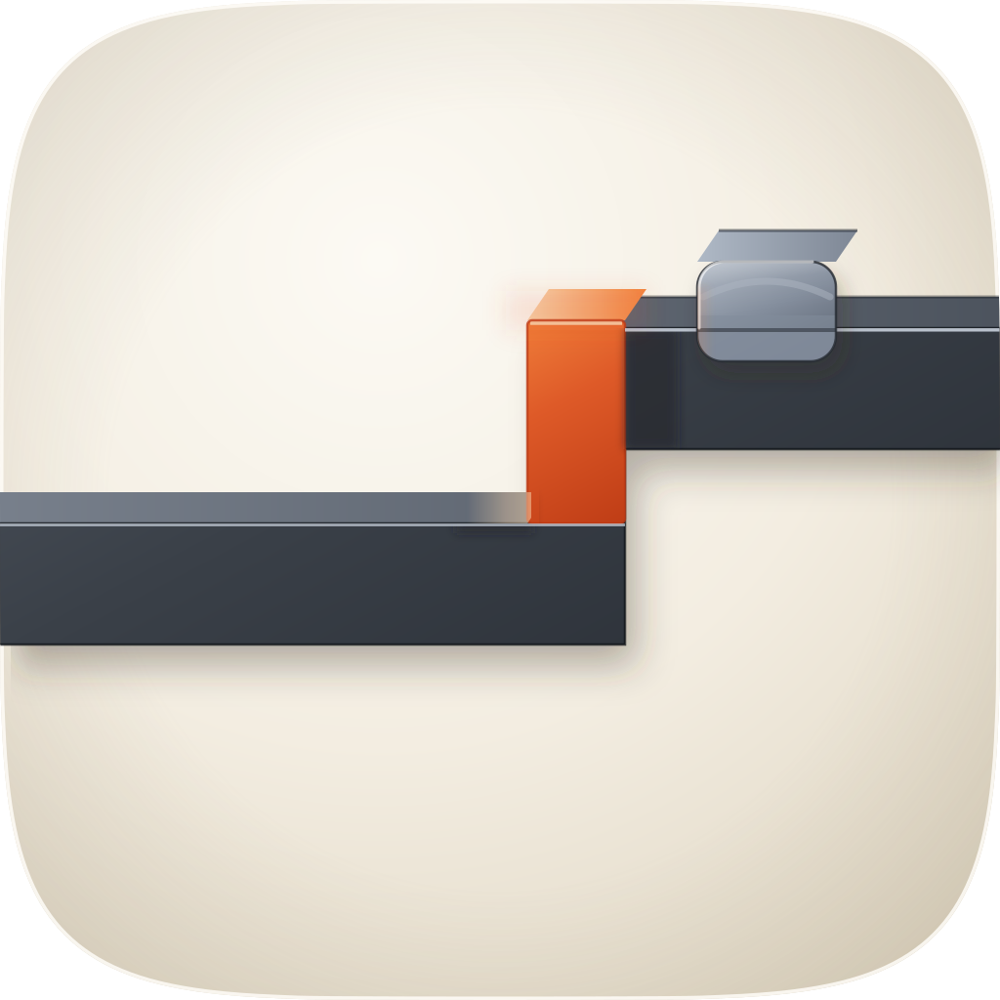 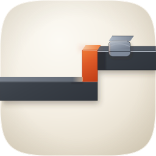 |
11 / 12 | Checks 1–4 clean on the renders, not on imagination: the step, the vermilion shim and the steel saddle are all still separable at 16px, where the tile measures 0.2331 RMS luminance contrast against a family median of 0.1805. Graphite reads 8.98:1 to 11.21:1 against the porcelain. One deduction, on #10: the four layers are there and identity is carried by profile rather than by hue, so a grayscale step is still a step — but Dark, Clear and Tinted have not been rendered, so that is satisfied by construction and not by test. The wrapped crown on the saddle is salvaged from C1 and C2, which both drew the follower as a clip turned over the rail rather than as a block cut flat. |
| C1 · icon-engineC-2e7a75.pngGPT Image 2 raster, corpus-referenced (apple-05 / apple-10 / apple-23), squircle-masked | 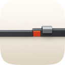 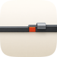 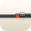 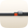 |
7 / 12 | The material target, and it did its job: satin graphite with a machined top chamfer, a warm gel block whose shaded face stays saturated, and a clip that wraps the rail. It loses on the two things the icon is about. Fails #2, because the object sits in the upper 45% of the tile with a dead lower half; fails #3 and #4, because it made the rise about a fifth of the rail's own thickness, so at 48px the step — the whole subject — is gone and what is left is a bar with a red button on it; and fails #10 as any flat raster does. Salvaged into the master: the wrapped crown on the follower, and the reading that a machined top chamfer running the full length is what makes graphite look cut rather than drawn. |
| C2 · icon-engineC-cc2708-2.pngGPT Image 2 raster, second take, squircle-masked | 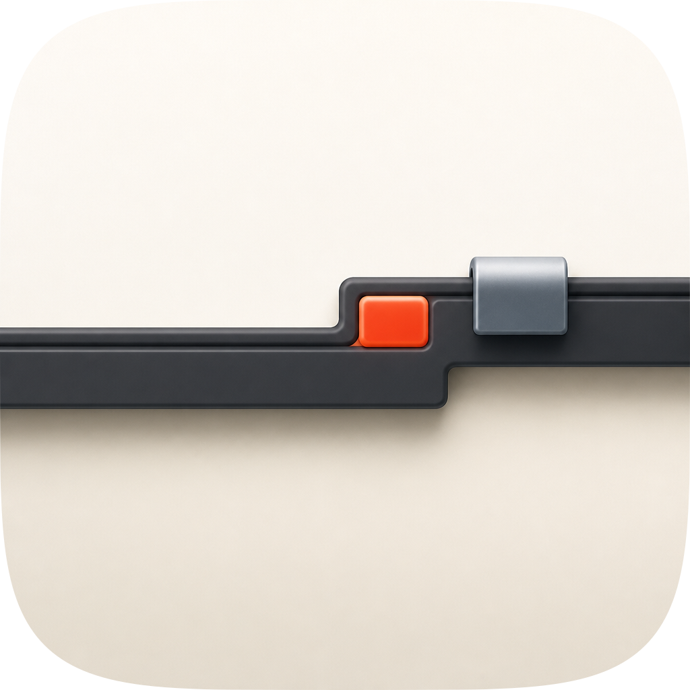 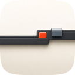 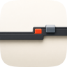 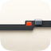 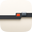 |
6 / 12 | Same register, worse geometry. It drew two rises rather than one, so the tile now carries two events and the accent no longer marks the only one; that is a metaphor pile-up rather than a step. The rail is thinner again, which pushes #3 and #4 further under, and the composition repeats C1's empty lower half. Kept on disk as the second raster take and scored here rather than quietly dropped. |
| B · icon-engineB-arrow-bf638b.svgArrow 1.1 vector take from the spec-as-brief | 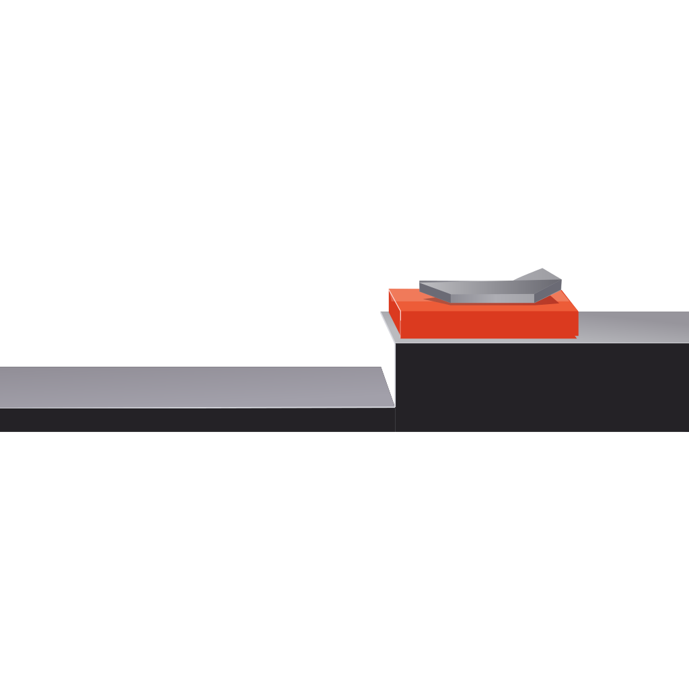 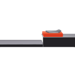 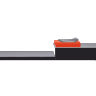 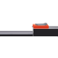 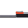 |
3 / 12 | Ships no ground at all, so it floats in the Dock: #1 and #7 fail outright, and #2 goes with them because the geometry sits in the lower left of an empty canvas. It also read the shim as a slab lying on top of the raised run rather than as the riser, which inverts the one idea in the brief — the accent becomes a thing on the rail instead of the difference between two levels. The follower is a floating chevron lit from its own direction, so #5 and #8 fail too. Nothing salvaged; its axonometric treads were already the construction the master uses. |
| prev · predecessor-dial.svgthe icon this commission replaces — retained for the before row | 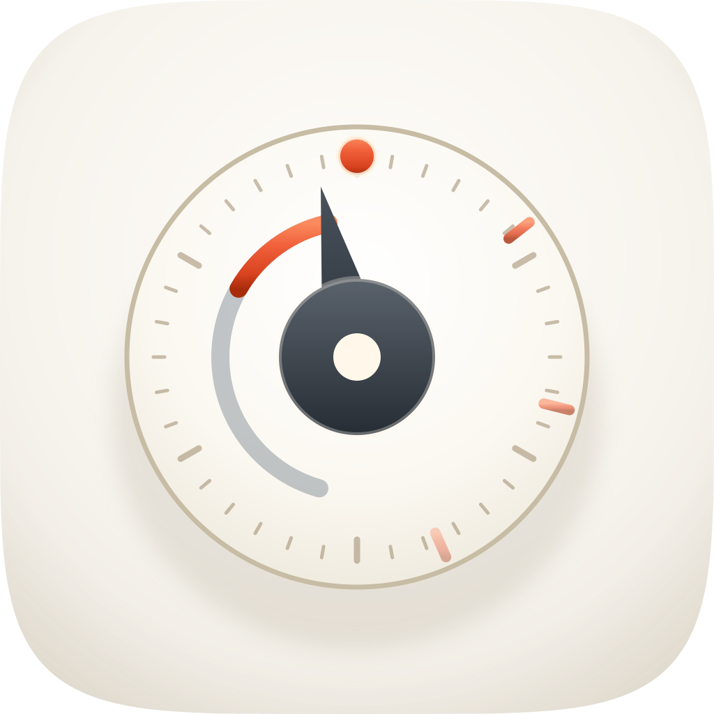 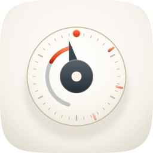 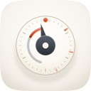 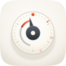 |
8 / 12 | Competent and unusable, which is why the score is the least interesting thing about this row. It fails #6, because the accent is scattered across the rim ticks instead of reserved for a focal element — measured, its warm pixels are 0.75% of the tile spread across a 123×98px box, where the shipping take's are 2.41% inside 29×59px. It fails #11, because its one nameable device is better-goal's: same cream dial, same charcoal hub with a cream centre, same needle, same vermilion top dot, separated only by a grey sweep arc and the tick pattern. At 16px it measures 0.1135 RMS contrast against better-goal's 0.1142, and the two are not distinguishable. The 12-point rubric never asks whether an icon is different from its sibling, which is exactly how this shipped. |
assets/squircle-path.txt, optically centred with a stated bleed, nameable as a filled silhouette, and measured at 0.2331 RMS contrast at 16px against a 36-icon family median of 0.1805. Its material provenance is the corpus rather than prose: the light axis, the porcelain range, the accent's hue band and the fact that a warm gel object's catch is cream rather than white were all sampled off apple-05 and apple-10 before the first line of the build script, and the follower's wrapped crown came off the raster takes. Known liabilities to revisit: (1) the shim reads 2.79:1 against the graphite on its down-light side, under the 3:1 bar — it survives because its up-light edge sits against porcelain at 3.22:1, but a deeper graphite or a wider cream catch would fix it properly; (2) the steel saddle is 2.92:1 against the cushion, so the part of it standing above the rail is the weakest element in the tile and is the first thing to go at 32px; (3) the object bleeds the full tile width where the composition guidance asks for 55–65%, a deliberate use of the edge-bleed device that has not been tested against a Dock full of inset siblings; (4) #10 is satisfied by construction and not by test — Dark, Clear and Tinted have not been rendered; (5) the doubling backoff, one of the skill's three ideas, is deliberately absent, because every sketch that encoded it spent the warm accent two or three times and turned the tile into a bar chart; (6) the large empty upper-left quadrant is load-bearing for the "mostly silent" reading and is also the thing most likely to read as an unfinished tile to someone who does not know the subject.| Measurement | Value | Reference |
|---|---|---|
| 16px RMS luminance contrast, alpha-masked | 0.2331 | family median 0.1805 across 36 marketplace icons; rank 10 of 36 |
| the same, rendered straight to 16px | 0.2329 | agrees with the 256→16 downsample to within 0.0002 |
| the icon this replaces | 0.1135 | better-goal 0.1142 — the pair were indistinguishable |
| graphite vs porcelain | 8.98:1 to 11.21:1 | rubric #7 bar is 3:1 |
| vermilion shim vs graphite | 2.79:1 | under the bar; carried by its porcelain-side edge at 3.22:1 |
| steel saddle vs cushion | 2.92:1 | the weakest element, and a stated liability |
| accent share of the tile | 2.41%, inside 29×59px | predecessor 0.75% spread across 123×98px |
| SVG master complexity | 24 paths, 4 named layers, 15.0KB | fidelity.py structure PASS |
python3 ../scripts/audit_sheet.py render <dir> (1024 / 256 / 128 / 96 / 64 / 32 sources); verified by its check subcommand. Contrast figures are RMS of gamma-encoded relative luminance on a 16px downsample over pixels with alpha > 0.5, which is the metric the family's earlier commissions used.